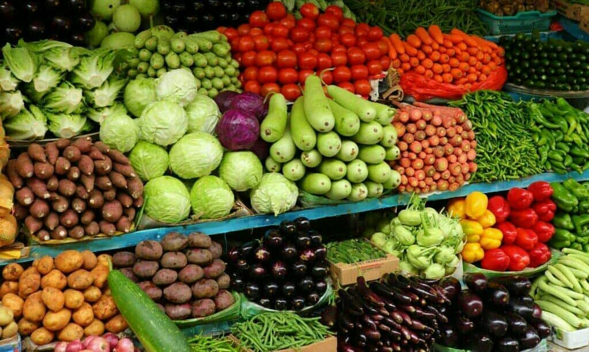
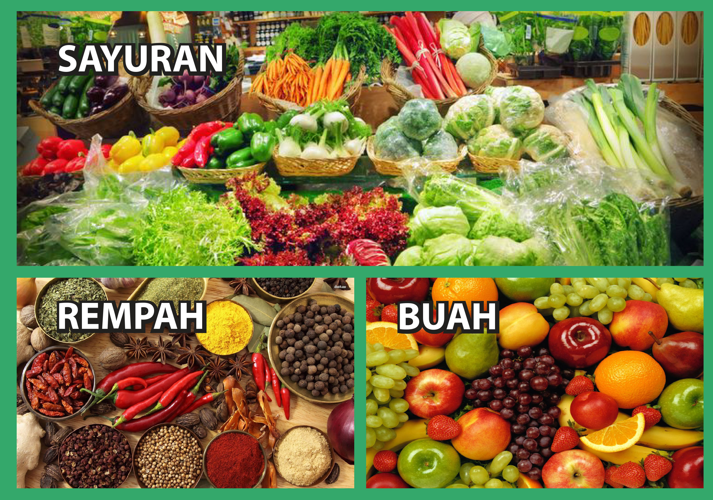
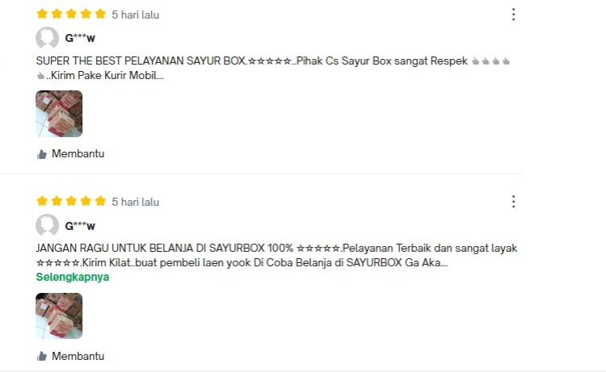

PROFIL FRESH

Selamat datang di FRESH, Toko Sayur dan Bahan Dapur kami, tempat di mana segar dan berkualitas bertemu dengan kreativitas dapur Anda! Kami adalah destinasi utama bagi para pecinta masakan yang ingin memasak dengan bahan-bahan terbaik. Dengan suasana yang ramah dan penuh semangat, kami mengundang Anda untuk menjelajahi koleksi kami yang luas dan beragam.
Tidak hanya itu, toko kami juga menawarkan berbagai bahan dapur esensial lainnya. Dari rempah-rempah yang harum hingga bumbu-bumbu khas, kami memiliki segalanya yang Anda butuhkan untuk memasak hidangan dari berbagai belahan dunia. Jangan lewatkan pula koleksi kami yang lengkap dari bahan kering seperti pasta, beras, dan kacang-kacangan yang dapat menjadi dasar dari setiap kreasi kuliner Anda.
PRODUK FRESH

FRESH menjual berbagai kebutuhan dapur untuk yang sehat, segar, dan berkualitas. Anda akan menemukan aneka pilihan buah-buahan dan sayuran segar, langsung dari petani lokal yang peduli akan kualitas. Mulai dari sayuran hijau yang segar hingga buah-buahan eksotis, kami selalu menyediakan yang terbaik untuk memastikan masakan Anda selalu menyenangkan mata dan lidah. Selain itu, kami juga menyediakan sayuran organik untuk mereka yang mengutamakan kesehatan dan keberlanjutan.
Tidak hanya itu, toko kami juga menawarkan berbagai bahan dapur esensial lainnya. Dari rempah-rempah yang harum hingga bumbu-bumbu khas, kami memiliki segalanya yang Anda butuhkan untuk memasak hidangan dari berbagai belahan dunia. Jangan lewatkan pula koleksi kami yang lengkap dari bahan kering seperti pasta, beras, dan kacang-kacangan yang dapat menjadi dasar dari setiap kreasi kuliner Anda..
| LIST PRODUK |
| SAYUR |
BUAH |
REMPAH |
| Kol |
Jeruk |
Daun Salam |
| Sawi |
Apel |
Kunyit |
| Kangkung |
Mangga |
Lengkuas |
CARA PEMESANAN
Bagi anda yang ingin memesan sayur,buah atau rempah-rempah dapur bisa ke link ini: KLIK
atau bisa ke instagram @fresh.vegatables
*Pengantaran untuk jarak 1-3 km akan gratis, lebih dari 3 km akan dikenakan biaya tambahan
TESTIMONI
